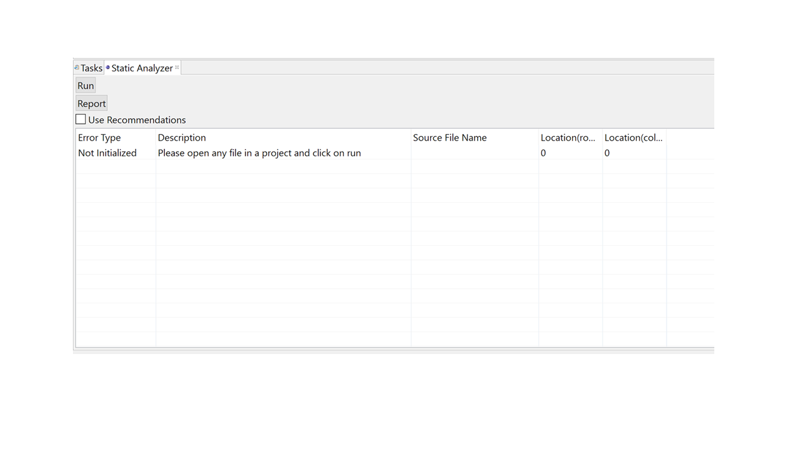

A Tool to Reduce Defects due to Dependencies between HTML5, JavaScript and CSS3
One of the most common errors developers make is to provide incorrect string identifiers across the HTML-JavaScript-CSS stack. The existing literature[1][2][3] shows that a significant percentage of defects observed in real-world codebases belong to this category. This research project is concerned with the existence of defects due to dependencies between HTML5, JavaScript and CSS3, specifically syntactic errors in string identifiers. Furthermore, the proposed solution will attempt to reduce the delta (time or cost) between defect injection and defect discovery by implementing a dedicated just-in-time syntactic string identifier resolution tool that constructs a symbol table to manage such dependencies.

Problem
While writing a front-end web application, a developer has to keep a track of the DOM in the HTML, the associated JavaScript and the associated CSS stylesheets as well. Because of this interplay, there are a lot of “syntactic” dependencies created. The figure above can help better illustrate the concept of “syntactic” dependencies. The developer has to keep track of how the DOM accesses the JavaScript and vice-versa, how the DOM accesses the CSS stylesheet and vice-versa, how the JavaScript accesses the CSS stylesheet and vice-versa. The figure illustrates the concept at a very small scale. For example, the button in “index.html” has an onclick event that calls the “getSomeData()” method in the “myScript.js” file. Similarly, the “myScripts.js” file attempts to manipulate the content of the DOM by accessing the “serverResponse” DOM element by its ID. The div that contains the button uses a style “myCssClass” as defined in the “theme.css” file. So even in about 20 lines of code, it is very easy to see the nature of these dependencies. And the developer can easily make the error resolving these dependencies. These errors can range from typographical errors to non-existent constructs like ID and functions, etc. It becomes very difficult for the developer to keep track of such dependencies as the size of the codebase increases. It is essential to note that in all of the modern web applications, these three languages work in parallel, making them prone to dependency related defects. Ocariza, et al.[2] found that most of such defects (specifically JavaScript) are injected by the programmers in the code itself. We will further explore the errors found in real-world codebases and how it maps to these dependencies in the literature review section.
Current Practices
Currently, the most common method used by developers to test such dependencies is to run the code on the browser, see the results and look for any error message in the console or any undesirable behavior in their application. The most common tools for such purpose is either the Google Chrome Dev tools or Firefox Firebug. There are different components of these tools that help the developer map the dependencies and find the defects if any. In most cases, any JavaScript related defect is directly caught by looking at the “console” view. But CSS related defects can only be found through a visual inspection of either the functionality of the module or through a code inspection. This round trip is not only an overhead adding to the development time and cost, but is also very error-prone.
Proposed Solution
As a solution to the problem, we propose a static analysis tool to identify dependencies between HTML5, CSS3 and JavaScript. To achieve this, we use different parsers to parse these languages and keep a track of dependencies. Like any other static anaylsis tool, this tool comes in two forms - command line and integrated plugin with an IDE. Eclipse was the IDE chosen.
User Study
As a part of validation, we would like to request you to take part in a very small and quick user study. In this user study, you will be asked to add a set of features to an existing codebase. These are very small features that focus on the dependencies discussed above. You will also be asked to self-report certain values and take part in a post-study survey.
Setup
- Download and install the latest version of Eclipse IDE for Java EE Developers from here.
- Download the plugin from here - https://goo.gl/I534gz. To download, click on the download icon in the bar on top :
- Install the plugin by copying the jar file to the dropins folder in the Eclipse installation directory.
- Start Eclipse and launch the plugin by going to Window -> Show View -> Other -> Static Analysis. Once properly installed and opened, you should see a screen similar to the following for the plugin : 
- Download the sample codebase from here - https://goo.gl/DyMSxQ
- You can either Unzip the contents of the zip file and import the project as an existing project into Eclipse or you can import into Eclipse using import from archive file option. This codebase is a sample bootstrap template for a landing page. Please spend some time understanding the codebase. We expect no more than 15 minutes to be spent on understanding the code.
- Implement the features as listed here. We expect no more than 60 minutes to implement all the features.
- Finish the post participation survey below.
Post-participation Survey
I sincerely thank you for taking out the time to be a part of this study. Please fill the post-participation survey here - http://goo.gl/forms/Jw4YLsl39k. Note : please provide your opinions in the survey about the over all concept. We do understand that Eclipse may not be everyone's choice for front end development.
Contact Us
If you have any issues or questions or wish to know more about this research, please contact me(Manit Singh Kalsi) at mkalsi@asu.edu .